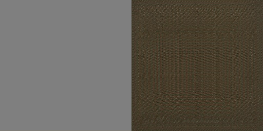
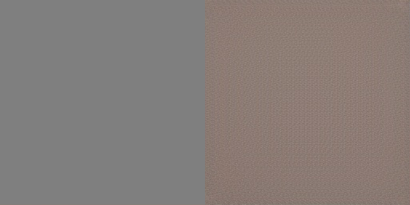
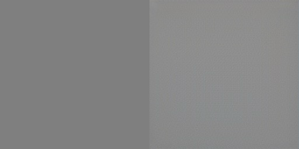
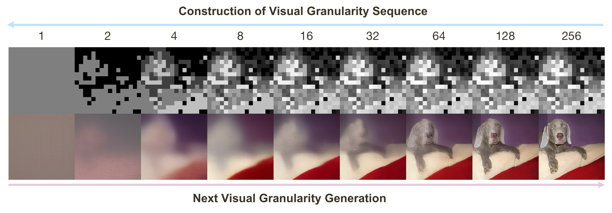
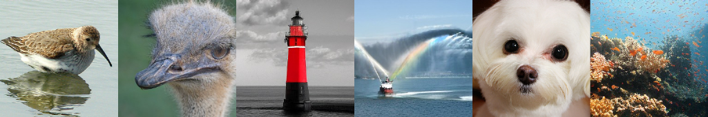
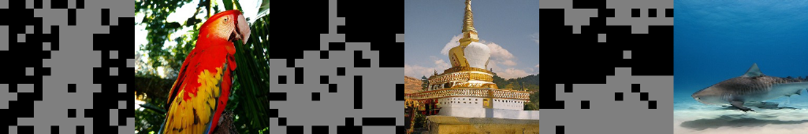
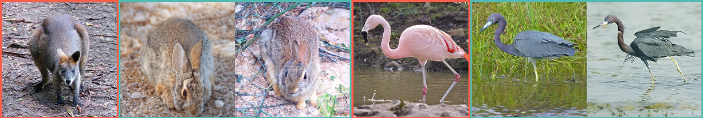

Construction of the visual granularity sequence on 256x256 image and the next visual granularity generation in the 16x16 latent space. Top-to-bottom: Number of unique tokens, structure map, generated image.

Our model can generate diverse and high-fidelity images.

The generated images align well with the generated binary structure map.

We can reuse structures from reference images (wallaby, flamingo) to generate new ones (rabbits, heron).
Abstract
- We propose a novel approach to image generation by decomposing an image into a structured sequence, where each element in the sequence shares the same spatial resolution but differs in the number of unique tokens used, capturing different level of visual granularity.
- Image generation is carried out through our newly introduced Next Visual Granularity (NVG) generation framework, which generates a visual granularity sequence beginning from an empty image and progressively refines it, from global layout to fine details, in a structured manner. This iterative process encodes a hierarchical, layered representation that offers fine-grained control over the generation process across multiple granularity levels.
- We train a series of NVG models for class-conditional image generation on the ImageNet dataset and observe clear scaling behavior. Compared to the VAR series, NVG consistently outperforms it in terms of FID scores (3.30 → 3.03, 2.57 → 2.44, 2.09 → 2.06). We also conduct extensive analysis to showcase the capability and potential of the NVG framework. Our code and models will be released.